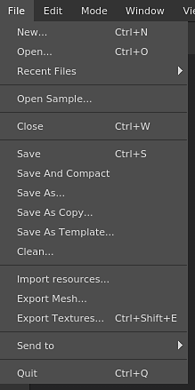

The file menu contains the actions for creating and saving the projects and as well the actions for exporting and importing resources into a project.
| Action | Description |
|---|---|
| New | Open the new project creation window. See: Project Creation for more information. |
| Open | Open an existing project file on the disk. |
| Recent files | List all the projects recently opened. |
| Open sample | Open one of the sample projects provided with the application. |
| Close | Close the currently opened project. |
| Save | Save the current project in place. |
| Save and compact | Save the current project in place and compress it (reduce footprint on disk). |
| Save as | Save the current project under a new name and location. |
| Save as copy | Save the current project under a new name and location as a copy and keep the current project opened. |
| Save as template | Save the current project settings into a template file that can be used for a new project. |
| Clean | Remove any unused resources from the current project (will take effect after the next Save). |
| Import resources | Open the import resources window. |
| Export mesh | Open the mesh export window that allows to export the current project as a 3D model file. |
| Export textures | Open the texture export window that allows to export the current project as bitmap textures. |
| Send to | List all the Send To actions to send a project to another application. |
| Quit | Close the application. If the current project has unsaved changes, it will prompt a message. |
Saving a project can be done in two manners: